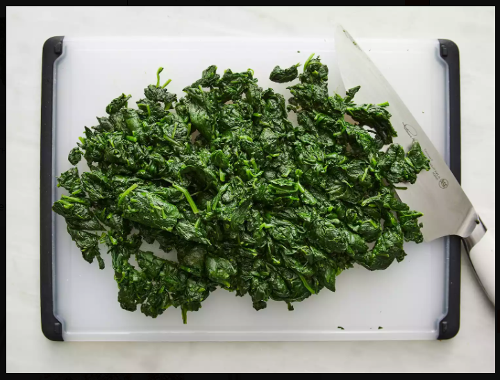

Home
Spinach Recipe

Description
Spinach is a nutritious leafy green vegetable commonly enjoyed as a side dish or main ingredient in various cuisines.
It is rich in vitamins, minerals, and antioxidants, making it a healthy addition to any meal.
This simple sautéed spinach recipe enhances its natural flavors while preserving its nutrients.
Ingredients
- 1 bunch fresh spinach, washed and chopped
- 1 tablespoon vegetable oil or butter
- 2 cloves garlic, minced
- 1/2 teaspoon salt (or to taste)
- 1/4 teaspoon black pepper
- 1/2 teaspoon lemon juice (optional)
Steps
- Heat the vegetable oil or butter in a pan over medium heat.
- Add the minced garlic and sauté for about 30 seconds until fragrant.
- Add the chopped spinach to the pan and stir well.
- Cook for about 3-5 minutes, stirring occasionally, until the spinach is wilted and tender.
- Season with salt, black pepper, and lemon juice (if using), then stir to combine.
- Remove from heat and serve warm as a side dish or topping.